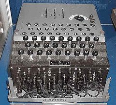
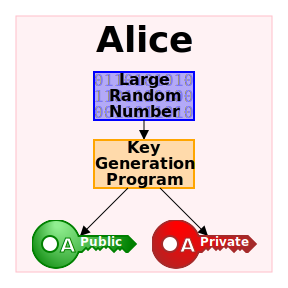
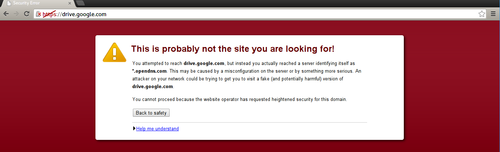

"NP" problems: Easy to verify a correct answer, but not necessarily to find a correct answer.
Alice wants to prove that she knows the answer, but without revealing it
How can she convince Bob that she knows the answer?
Example: airline data
Example: patient data
Multi-party auction
Five people are conducting an auction online
None of them trust each other
How do you know that someone won't change his bid at the last minute?
How do you know the payer will pay the money?
How do you know the seller won't take the money and run?
Cryptography is relevant
Edward Snowden, the NSA, and PRISM
June 5, 2013: the leaks begin!
February 12, 2014: still ongoing
What was disclosed?
Selected disclosures
NSA spied on Second Life and World of Warcraft users with fake characters
NSA tracks online sexual activity of "radicalizers", in order to discredit them
NSA harvets millions of emails, tracking locations of cell phones
"I, sitting at my desk [could] wiretap anyone, from you or your accountant, to a federal judge or even the president, if I had a personal email"
Similarities to the East German Stasi
XKeyscore
"You could read anyone’s email in the world, anybody you’ve got an email address for. Any website: You can watch traffic to and from it. Any computer that an individual sits at: You can watch it. Any laptop that you’re tracking: you can follow it as it moves from place to place throughout the world. It’s a one-stop-shop for access to the NSA’s information."
“…You can tag individuals… Let’s say you work at a major German corporation and I want access to that network, I can track your username on a website on a form somewhere, I can track your real name, I can track associations with your friends and I can build what’s called a fingerprint, which is network activity unique to you, which means anywhere you go in the world, anywhere you try to sort of hide your online presence, your identity.”"
Getting started
Some basic facts
Cryptography relies on discrete mathematics
Any message can be expressed using an alphabet
Any alphabet can be mapped to a two-character (binary) alphabet
Any two charactres (bits) can be XOR -ed together to create a different bit
A one-way-function is easy to compute, but hard to invert.
Negligible probability: functions such as 2^{-x}
Probabilistic polynomial time: what does this mean?
The bad news
We have a provable upper bound on security
A one-time pad consists of random characters that are XORed with the message
A one-time pad provides "perfect" security.
So why don't we all just use one-time pads?
The worse news
50% is a very narrow target
The Majority principle allows an attacker to amplify even small weaknesses.
It all starts with steganography
Keep it hidden!
Mary, Queen of Scots relied on steganography in prison
But don't hide everything
Kerckhoffs's principle
A cryptosystem should be secure even if everything about the system, except the key, is public knowledge
The opposite is "security by obscurity".
Symmetric key encryption
Caesar, the Pope, the King of Spain, and the Devil
Simple alphabetic shift
Not so great in the era of computers
...or if you always use the same shift offset
Vigenère
Considered uncrackable (le chiffre indéchiffrable)
Vulnerable to analysis of the distribution of characters
Enigma

Was used commercially before being adopted by Nazi Germany
Alan Turing was known for his work on cracking the enigma (among more)
Without the ability to decipher the enigma, the Allies may have lost World War II
Geheimschreiber
The successor to the engima machine
5 "XOR" wheels, 5 transpose wheels
Not all transpositions are equally likely
Messages all begin with "UMUM 4 VEVE" and end with "HH"
This is a known-plaintext attack
http://chimeracoder.github.io/geheimschreiber/
Asymmetric key encryption
Also known as public - key cryptography.
Advantage: Does not require secure exchange of private keys!
Disadvantage: Keys need to be authenticated
Disadvantage: Expensive
Disadvantage: Theoretically complex
Disadvantage: Reliance on prime numbers

RSA
In the discrete realm, exponentiation is easy, logarithms are hard.
Exponentiation is essentially a one-way-function
Finding factors of a number can be easy or tough
Finding the factors of the product of two primes is really tough
Online encryption
Do nothing
Trusted third party (SSL/TLS)
End-to-end (PGP/GPG, OTR)
SSL/TLS
This is the underpinning of "https"
Users encrypt content before sending it using the website's public key (certificate)
Websites decrypt it using the corresponding private key
How do you know that you are using the correct public key for encryption?
Certificate Authorities
Certificates are validated by trusted third parties
Certificate pinning can prevent man-in-the-middle attacks.

But who will watch the watchdogs?
Email
Email is inherently insecure by design.
Think of email as a postcard.
...except worse, because snail mail enjoys additional legal protections